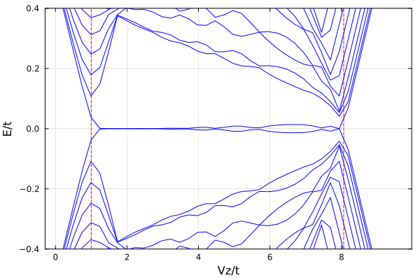
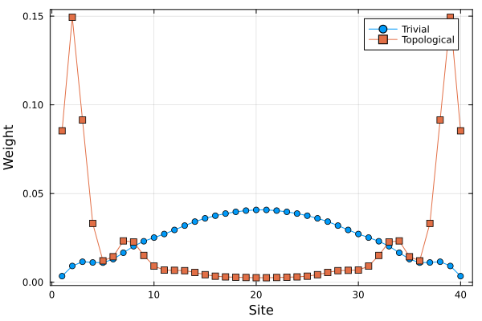

Majorana nanowire
A spinful wire with Rashba spin-orbit coupling, a Zeeman field $V_z$ and s-wave pairing $Δ$ becomes a topological superconductor between two critical fields, with Majorana zero modes at its ends. The model is quadratic, so BdG() turns it into a matrix of size four times the number of sites, and BdGEigen gives its particle-hole symmetric spectrum.
using FermionicHilbertSpacesusing FermionicHilbertSpaces.FreeFermionsusing Plotsusing LinearAlgebrafunction ham(c, N; μ, t, Δ, Vz, α) ham = 0 for j in 1:N ham += -μ * (c[j, :↑]' * c[j, :↑] + c[j, :↓]' * c[j, :↓]) ham += Vz / 2 * (c[j, :↑]' * c[j, :↑] - c[j, :↓]' * c[j, :↓]) ham += Δ * c[j, :↑]' * c[j, :↓]' + hc end for j in 1:(N - 1) ham += -t * (c[j + 1, :↑]' * c[j, :↑] + c[j + 1, :↓]' * c[j, :↓]) + hc # Spin-orbit coupling i α c†_{j+1} σ_y c_j ham += α * (c[j + 1, :↑]' * c[j, :↓] - c[j + 1, :↓]' * c[j, :↑]) + hc end return hamend@fermions cN = 40t = 1.0μ = -2.0Δ = 0.5α = 0.5Hbdg = hilbert_space(c, [(n, s) for n in 1:N for s in (:↑, :↓)], BdG())160-dimensional BdGHilbertSpace
Physical modes: 80
Parent: ConstrainedSpace(c[(1, :↑), (1, :↓), ..., (40, :↑), (40, :↓)], 160-dim)The bulk gap closes at the band bottom and top, where the Zeeman splitting equals the gap $\sqrt{ε^2 + Δ^2}$.
Vz_c = 2sqrt((μ + 2t)^2 + Δ^2)Vz_c2 = 2sqrt((μ - 2t)^2 + Δ^2)8.06225774829855Spectrum versus Zeeman field
The BdG matrix is half the Nambu Hamiltonian, so the quasiparticle energies are twice its eigenvalues. Between the critical fields (dashed) two levels stay close to zero energy.
Vzs = range(0.0, Vz_c2 * 1.2, length = 40)energies = stack(Vzs) do Vz vals, _ = eigen(representation(ham(c, N; μ, t, Δ, Vz, α), Hbdg, Matrix), BdGEigen()) 2valsendp1 = plot(Vzs ./ t, energies' ./ t; legend = false, color = :blue, xlabel = "Vz/t", ylabel = "E/t", ylims = (-0.4, 0.4), frame = :box)vline!(p1, [Vz_c, Vz_c2] ./ t; color = :red, linestyle = :dash)
Spatial profile of the lowest mode
Column M of the eigenvectors, for M modes, holds the non-positive energy closest to zero. Its weight on a site sums the particle and hole components of both spins. In the topological phase it sits at the ends of the wire, while in the trivial phase it spreads through the bulk.
M = 2Ndensities = map((0.5Vz_c, 1.2Vz_c)) do Vz _, vecs = eigen(representation(ham(c, N; μ, t, Δ, Vz, α), Hbdg, Matrix), BdGEigen()) spin_weights = map(x -> sum(abs2, x), Iterators.partition(vecs[:, M], 2)) spin_weights[1:N] .+ spin_weights[(N + 1):end]endp2 = plot(1:N, densities[1]; label = "Trivial", marker = :circle, xlabel = "Site", ylabel = "Weight", frame = :box)plot!(p2, 1:N, densities[2]; label = "Topological", marker = :square)
This page was generated using Literate.jl.